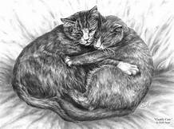

Introductory
The First Cat Show HabitsHabits
Trained Cats
Usefulness of Cats
Usefulness of cats

In our urban and suburban houses what should we do without cats? In our sitting or bedrooms, our libraries, in our kitchens and storerooms, our farms, barns and rickyards, in our docks, our granaries, our ships and our wharves, in our corn markkets, meat markets and other places too rumerous to mention, how useful they are in our ships,however, the rats oft set them at defiance: still they are of great service.
How wonderfully patient is the cat when watching for rats or mice, awaiting their agress from their place of refuge or that which is their home! How well Shakespeare in Paricies, Act ill.,describes this keen attention of the cat to its natural pursuit!.
The cat, with eyne of burning coal, Now crouches from(before) the mouse's hole.
How wonderfully patient is the cat when watching for rats or mice, awaiting their agress from their place of refuge or that which is their home! How well Shakespeare in Paricies, Act ill.,describes this keen attention of the cat to its natural pursuit!.How wonderfully patient is the cat when watching for rats or mice, awaiting their agress from their place of refuge or that which is their home! How well Shakespeare in Paricies, Act ill.,describes this keen attention of the cat to its natural pursuit!.
In our urban and suburban houses what should we do without cats? In our sitting or bedrooms, our libraries, in our kitchens and storerooms, our farms, barns and rickyards, in our docks, our granaries, our ships and our wharves, in our corn markkets, meat markets and other places too rumerous to mention, how useful they are in our ships,however, the rats oft set them at defiance: still they are of great service.
How wonderfully patient is the cat when watching for rats or mice, awaiting their agress from their place of refuge or that which is their home! How well Shakespeare in Paricies, Act ill.,describes this keen attention of the cat to its natural pursuit!.
The cat, with eyne of burning coal, Now crouches from(before) the mouse's hole.
How wonderfully patient is the cat when watching for rats or mice, awaiting their agress from their place of refuge or that which is their home! How well Shakespeare in Paricies, Act ill.,describes this keen attention of the cat to its natural pursuit!.How wonderfully patient is the cat when watching for rats or mice, awaiting their agress from their place of refuge or that which is their home! How well Shakespeare in Paricies, Act ill.,describes this keen attention of the cat to its natural pursuit!.
Let any one have a plague of rats and mice, as I once had, and let them be delivered therefrom by cats, as I was, and they will have a lasting and kind regard for them.